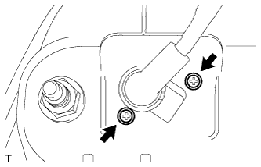
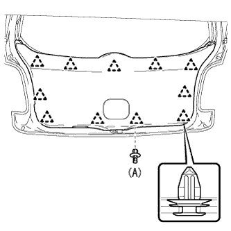
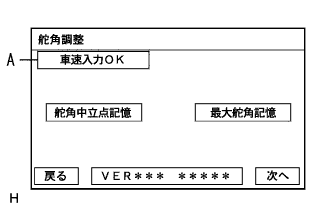

|
Install the back door outside garnish with the 4 nuts.
Connect each connector.
Television Camera Assembly Installation |
| 1. Install Television Camera Assembly |
 |
Install the television camera assembly to the back door outside garnish assembly with the 2 screws.
| 2. Install Back Door Outside Garnish Assembly |
|
Install the back door outside garnish with the 4 nuts.
Connect each connector.
| 3. Install Back Door Trim Panel Assembly |
 |
Engage the 11 clips to install the back door trim panel assembly.
Install clip (A).
| 4. Install Back Door Inside Handle |
 |
Engage the 4 claws to install the back door inside handle.
| 5. Install Back Door Side Garnish LH |
 |
Engage the clips and claws to install the back door side garnish LH.
 |
Align the guide position, and engage the 2 claws to install the package tray trim garnish hook.
 |
Engage the pin of the package tray trim garnish hook.
| 6. Install Back Door Side Garnish RH |
| 7. Install Back Door Trim Panel Assembly Upper |
 |
Engage the 4 clips and 4 claws to install the back door trim panel assembly upper.
| 8. Camera Optical Axis Adjustment |
Preparation Before Adjustment
Set the steering wheel in the straight-ahead position and stop the vehicle.
Adjust the tire pressure to the specified value beforehand.
 |
Place the camera optical axis adjustment target bars in the positions shown in the illustration.
Start diagnosis (see )
)
Select "Function Inspection/Adjustment" on the service inspection screen to display the function inspection/adjustment screen.
Select "Camera Optical Axis Adjustment" on the function inspection/adjustment screen to display the steering angle adjustment screen.
 |
Steering Angle Adjustment
) |
Camera Optical Axis Adjustment
)Press switch A or B to rotate C so that it is parallel to the adjustment target bar.
Press switches D, E, F and G to move C left, right, up and down so that the adjustment target bar is in the center of C (center of the red frame).
Select "Next" to display the confirmation screen.
 |
Confirmation Screen
Check that A (indicating 117 cm from the bumper edge) and the adjustment target bar almost overlap. Also, check that when the steering wheel is in the straight-ahead position, the estimated course line is straight (overlaps the vehicle width extension line).
When "Complete" is selected, the screen changes to the function inspection/adjustment screen and the camera optical axis adjustment value is stored.
Diagnosis Cancellation (see)